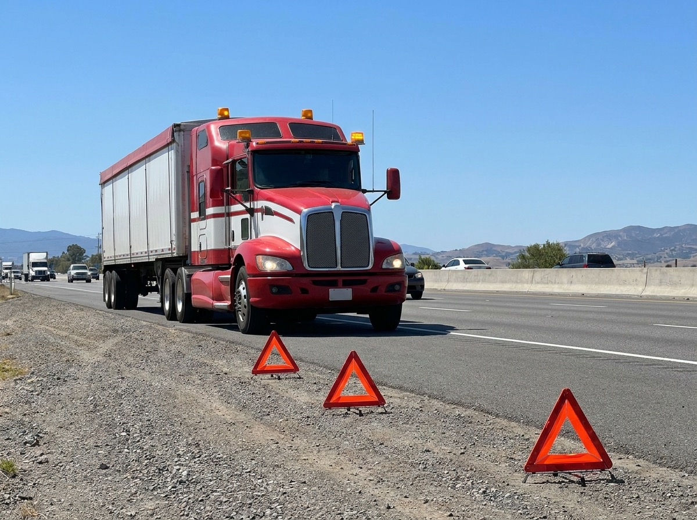
Top 5 Highway 401 Breakdown Hotspots: 45-Min Mobile Response
Discover the Highway 401 corridor's top breakdown hotspots for commercial trucks and how a Highway 401 roadside mechanic can reach you fast, 24/7.
Cold Weather Diesel Survival: Preventing Fuel Gelling on Ontario Highways
Learn how to prevent diesel fuel gelling and cold starts issues on Ontario highways, plus what to do if your rig won't start in freezing temps.
Understanding DPF & DEF System Fault Codes: On-Site Mobile Regeneration
Learn what DPF and DEF fault codes mean for your commercial truck and how on-site mobile DPF regen gets you back on Highway 400 without a shop visit.
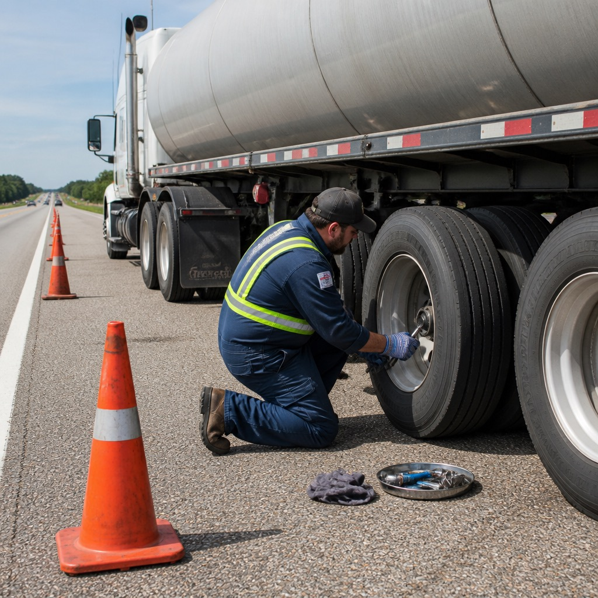
Commercial Trailer Brake Lockups on the QEW: Roadside Release Techniques
Understand why commercial trailer brakes lock up on the QEW and the safe roadside techniques mobile mechanics use to release them without damage.
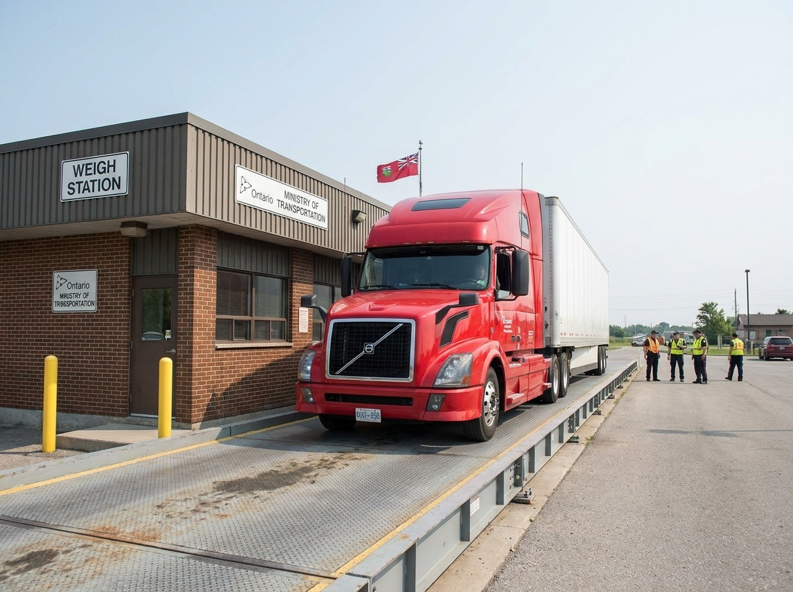
Essential DOT Yard Inspection Checklist: Avoiding Roadside Out-of-Service Orders
Use this DOT yard inspection checklist for Ontario fleets to catch violations before they turn into a roadside out-of-service order or CVSA hit.
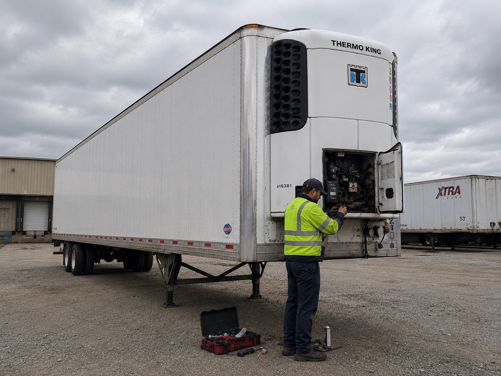
Reefer Temperature Alarms on Hwy 407: Emergency Refrigeration Repairs
Reefer alarm going off on the 407? Learn what triggers temperature alarms and how emergency reefer service protects your load across the GTA.
How Comdata, EFS & Fleet Cards Work for Instant Roadside Dispatch
Learn how Comdata, EFS, and other fleet cards streamline mobile repair dispatch and payment for commercial trucks breaking down across Ontario.

Blown Commercial Tires on Hwy 400: Dual Replacement Safety Protocol
A blown commercial tire on Hwy 400 demands a specific safety and replacement protocol. Here's what drivers and dispatchers need to know.
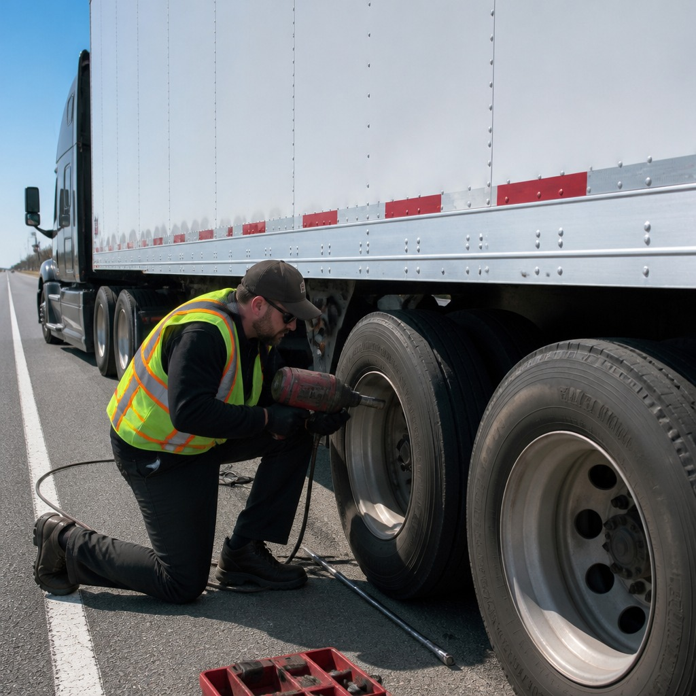
Mobile Air Brake Line Leak Diagnostics & Gladhands Repair
Air brake line leak on your truck or trailer? Here's how mobile techs diagnose leaks and repair gladhands and air lines roadside in the GTA.
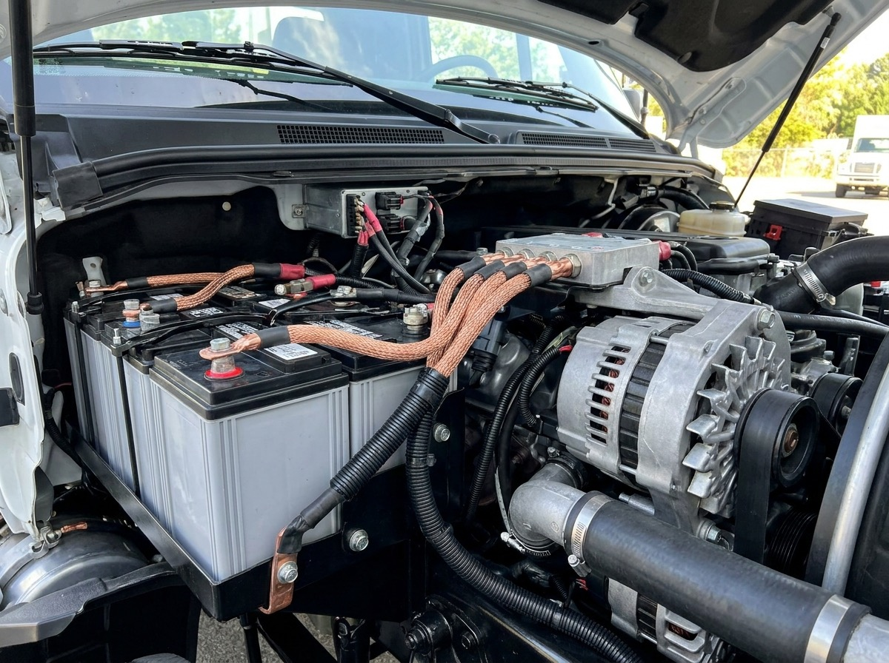
Commercial Battery Jumpstarts & Alternator Testing on the Shoulder
Commercial truck won't start on the shoulder? Learn the difference between a dead battery and a failing alternator, and how roadside testing works.
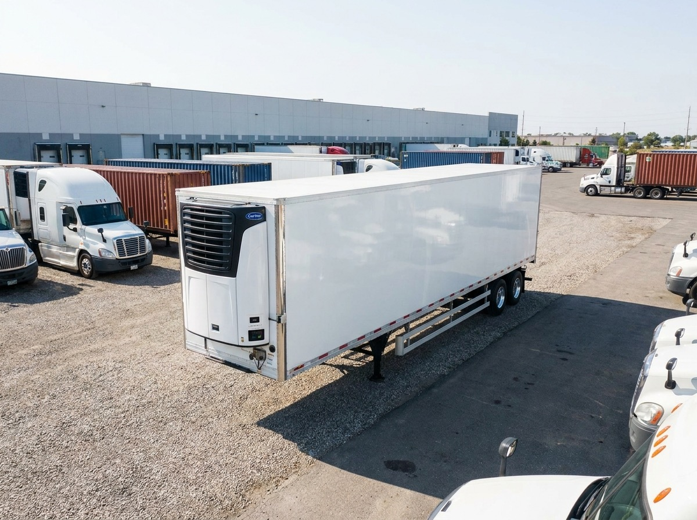
Preventing Landing Gear Failures on Loaded 53-Foot Trailers
Learn why landing gear fails on loaded 53-foot trailers and how to prevent costly breakdowns across the GTA. 24/7 mobile trailer landing gear repair Ontario.
Heavy-Duty Clutch & Transmission Diagnostic Troubleshooting
A practical guide to diagnosing clutch slip, hard shifting, and gear grinding in heavy-duty trucks. Trusted heavy duty transmission diagnostics across the GTA.
Ontario Winter Driving: Air Dryer Cartridge & Line Anti-Freeze Protection
Protect your air brake system from winter freeze-ups with proper air dryer cartridge maintenance. Expert air dryer cartridge winter truck service across the GTA.
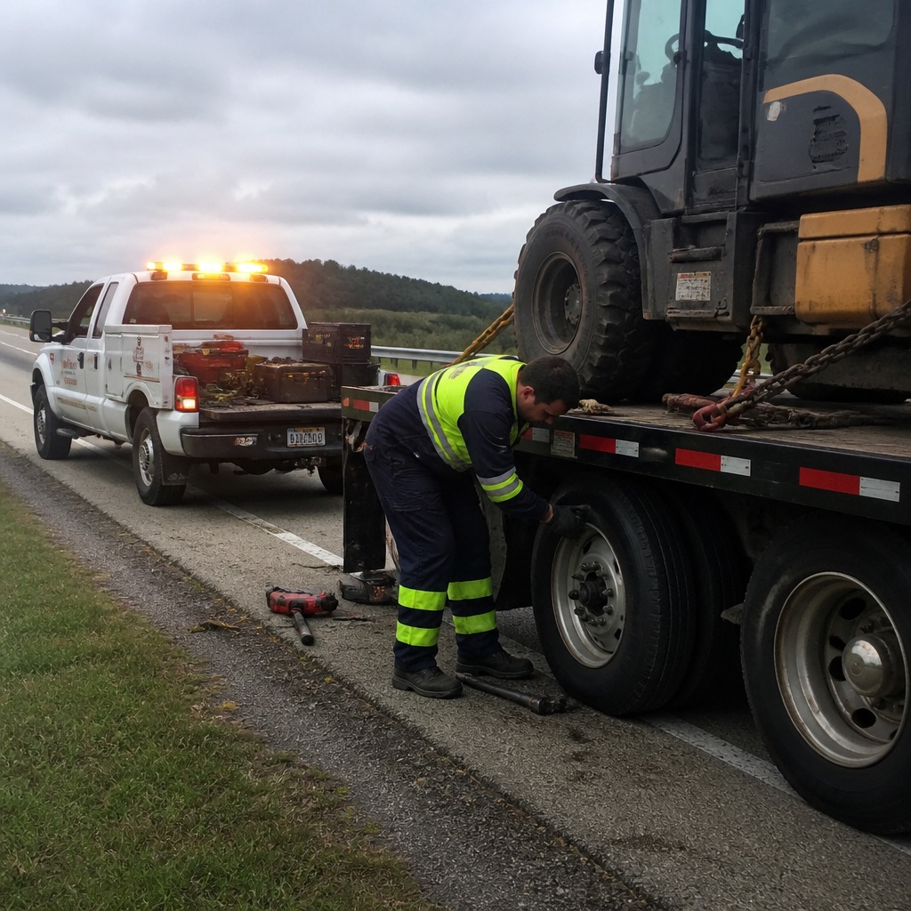
Mobile Diesel Mechanic vs. Towing to Dealer: Cost & Downtime Comparison
Compare the real cost and downtime of calling a mobile diesel mechanic versus towing a truck to a dealer shop. Straight talk on mobile diesel mechanic vs towing.
Navigating Scales & MTO Safety Inspections Across Durham Region
What commercial drivers need to know about MTO scales and safety inspections in Durham Region. Practical prep tips and 24/7 mobile repair support if a truck fails.
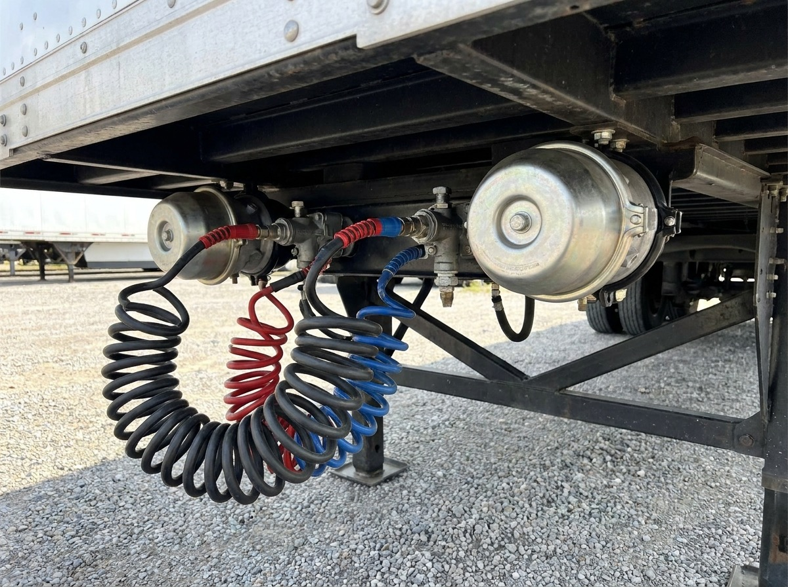
Emergency Suspension & Air Bag Replacements Roadside
Air bag suspension failure on a semi-truck or trailer? Learn what causes it and how mobile roadside repair gets you back on the road across the GTA.
5th Wheel Coupling Safety & Latching Mechanism Repairs
Worn or unsafe 5th wheel coupling? Learn the warning signs and how mobile heavy-duty repair fixes latching mechanisms roadside across the GTA.
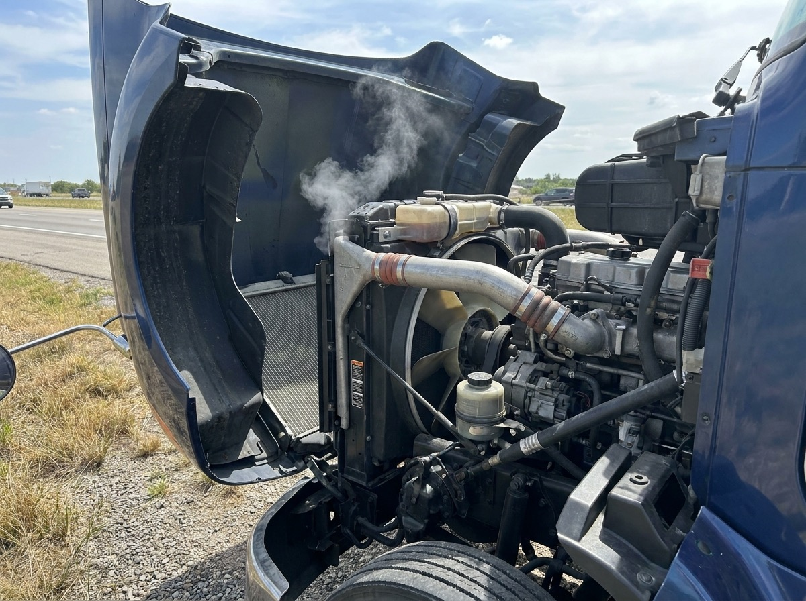
Overheating Diesel Engines: Radiator & Water Pump Field Fixes
Diesel truck overheating on the highway? Learn the causes of radiator and water pump failure and how mobile roadside repair cools things down fast.
Turbocharger Pressure Drops & Intake Leak Troubleshooting
Losing boost or power on your diesel truck? Learn how to diagnose turbocharger pressure drops and intake leaks with mobile roadside repair.
Trailer Electrical & Tail Light Harness Short Repairs
Trailer lights out or flickering? Learn common causes of tail light harness shorts and how mobile roadside repair fixes them fast across the GTA.
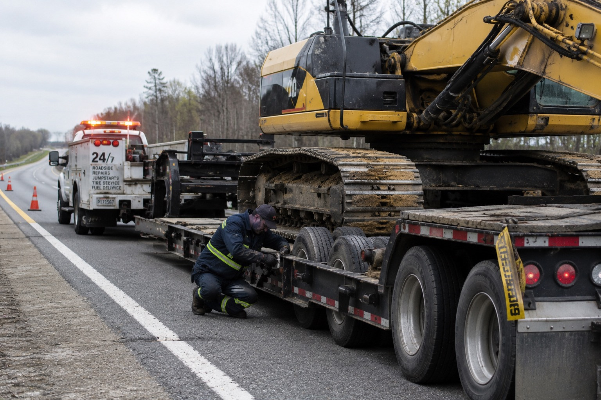
Fleet Preventive Maintenance (PM) Yard Checks in Brampton & Mississauga
Mobile fleet preventive maintenance for Brampton and Mississauga yards. On-site PM inspections for tractors, trailers, and fleets. Call (289) 943-7205.
What To Do When Stranded on Highway 401: Driver Safety Protocol
Step-by-step safety protocol for commercial drivers stranded on Highway 401. What to do first, how to stay safe, and when to call for mobile repair.
Commercial Truck Wheel Seal Leaks & Axle Bearing Diagnostics
How to diagnose wheel seal leaks and axle bearing failure on commercial trucks and trailers, and when mobile repair is the right call. GTA 24/7 service.
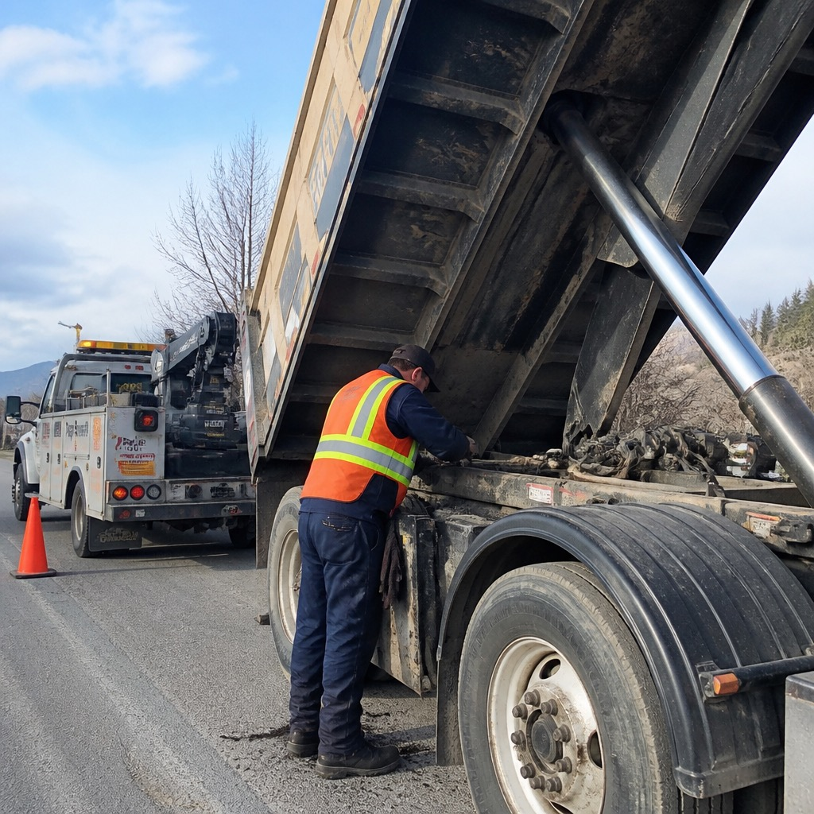
Hydraulic Hose Failures on Flatbeds & Dump Trucks: Mobile Replacement
Why hydraulic hoses fail on flatbeds and dump trucks, the risks of a blown line, and how mobile on-site hose replacement gets equipment back to work fast.
Direct Corporate Net-30 Invoicing for Out-of-Province Canadian Fleets
Net-30 corporate invoicing for out-of-province Canadian fleets needing mobile heavy-duty repair in the GTA. Simple billing, no upfront payment hassle.
Pre-Trip Safety Checks Every Driver Should Run Before the 401
A fast, practical pre-trip circle check for heavy trucks and trailers before merging onto the 401, 400, QEW or 407.
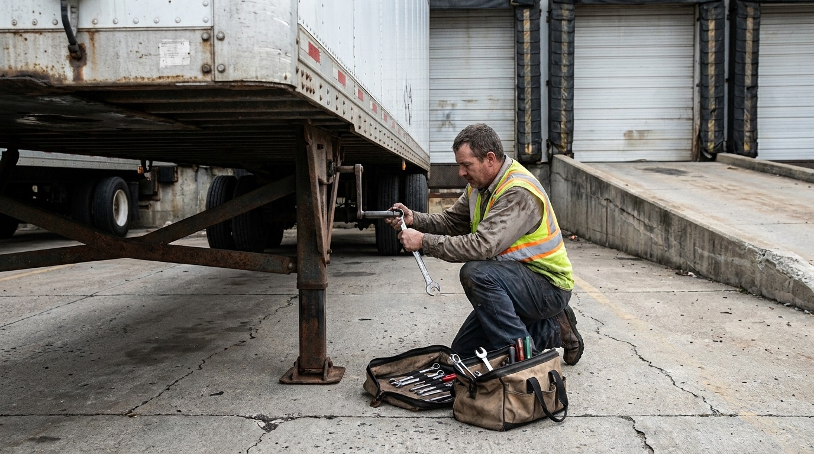
Backing a Loaded Semi-Trailer Safely at a GTA Dock or Yard
Practical technique for backing a loaded semi-trailer into a tight GTA dock or yard without a jackknife or dock damage.
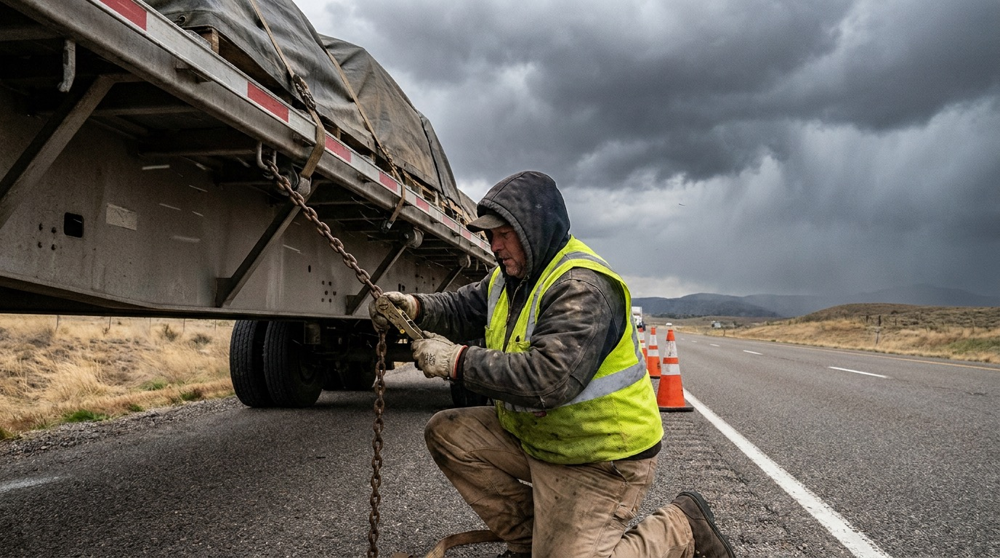
Driving a High-Profile Trailer in High Wind on the QEW and 407
How high winds affect empty vans, reefers and flatbeds on exposed stretches of the QEW and 407, and how to stay in control.
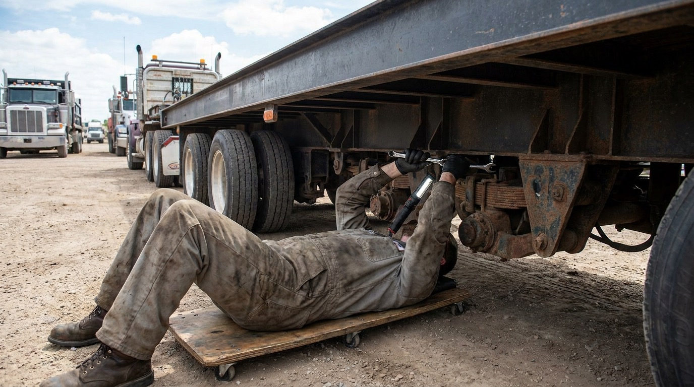
Heavy Haul & Oversized Load Trailers: Types, Permits and What Breaks First
Lowboy and RGN trailer configurations, Ontario permit rules, and the axle and suspension components that wear first.
Dump Truck & Vocational Fleet Maintenance for Ontario Construction Hauling
Why dump trucks and vocational units working GTA construction routes need a different maintenance rhythm than highway trucks.